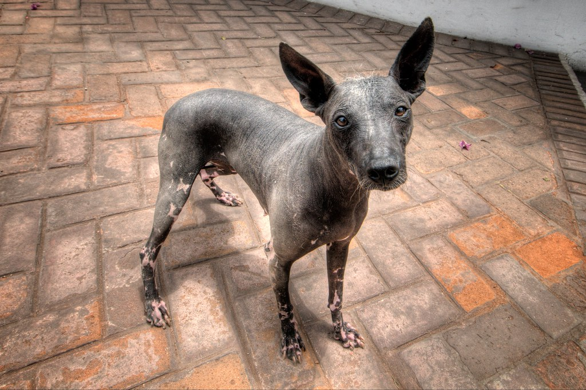

If you're not sure if a Boston Terrier is right for you, don't get discouraged! The most important thing is finding a dog that fits well in your life, regardless of breed. Check out the following links to explore some other options for breeds you might fall in love with.
Like the small, brachycephalic look, but not sold on Bostons? Give the French bulldog a try! These little guys have skyrocketed in popularity in recent years, for good reason.
Want to branch out further in terms of size, but stay in the non-sporting group? The standard poodle is a popular choice for families, and you're in no way obligated to style their fur.
Looking for a dog no one else on your block will have? Check out the xoloitzcuintli, a unique-looking breed that comes in three sizes as well as hairless and coated varieties.
